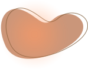
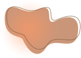
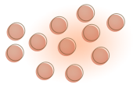
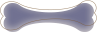
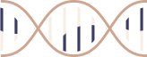

Одно из проявлений НФ1 - пятна на коже цвета кофе с молоком.
Но каждое такое пятно – это не повод ставить точку и опускать руки.
НФ1 Нейрофиброматоз 1 типа – редкое генетическое заболевание. К сожалению, пока его невозможно излечить полностью. Но это вовсе не значит, что жизнь с нейрофиброматозом 1 типа состоит из вызовов и ограничений. Несмотря на сложности, с НФ1 можно вести полноценную жизнь, сохранять положительный настрой, быть открытым миру и его многочисленным возможностям.
Познакомиться с людьми, которые живут с нейрофиброматозом 1 типа
Как распознать Нейрофиброматоз
Нейрофиброматоз 1 типа - сложное заболевание, но бояться его не нужно. Необходимо знать, на что обратить внимание и как действовать в случае подозрений.
Диагноз может быть поставлен, если одновременно наблюдаются два и более симптомов из этого списка не пугайтесь, все сложные названия объясняются на карточках
- Клинические проявления НФ1 настолько разнообразны, что бывает сложно понять, с чего начать обследование
- Некоторые проявления заболевания выявляются при рождении, однако другие развиваются с возрастом
- Есть симптомы, появление которых характерно для определенного возраста и на это можно ориентироваться
- Если выявлен только 1 критерий НФ1, следует наблюдать за ребенком в течение его роста, чтобы увидеть развиваются ли дополнительные признаки
-
Рождение
Пятна цвета «кофе с молоком»
Деформация
длинных
трубчатых
костей -
1 год
Неврологическая симптоматика
Плексиформные нейрофибромы (но могут проявиться и в старшем возрасте)
-
6 лет
Гиперпигментация
по типу веснушекСколиоз (6-10 лет)
Глиомы
зрительных
нервов -
13 лет
Раннее или позднее половое созревание
Проблемы
с обучением
или поведениемУзелки
ЛишаКожные нейрофибромы
-
20 лет
Гипертония (возможна
в любом возрасте,
но у взрослых чаще)
-
6> 
Шесть и более пятен цвета «кофе с молоком» на коже
Они заметны невооруженным глазом.
-
2> 
Две и более нейрофибромы либо одна плексиформная нейрофиброма
С этим сложнее - заметные “узелки” под кожей бывают очень разных видов, а нейрофибромы могут прятаться по всему организму. Нейрофиброму вряд ли можно распознать в домашних условиях, здесь нужна профессиональная диагностика.
-

Гиперпигментация по типу веснушек не только на лице
Обратите внимание на область подмышек, на сгибах локтей и коленей и в паху.
-

Характерные костные аномалии – проблемы с опорно-двигательным аппаратом
Деформации позвоночника и костей по всему телу могут быть явными и/или выявляться с использованием диагностического оборудования (рентген, КТ, МРТ).
-
Два и более узелка Лиша и/или Глиомы зрительных нервов
Это пятнышки вокруг зрачка.
-

Глиомы (опухоли) зрительных нервов
Чаще всего проявляются ухудшением зрения, точно распознать их может только специальная врачебная диагностика.
Подробнее о симптомах НФ1, его проявлениях, сложностях и особенностях можно
узнать здесьЧто делать ?
Если кажется, что у ребенка нейрофиброматоз
Если вы нашли у вашего ребенка два или более симптома, характерных для НФ1
-
1
Постарайтесь не нервничать и не волноваться.
-
2
Обратитесь в пациентстскую организацию 22/17